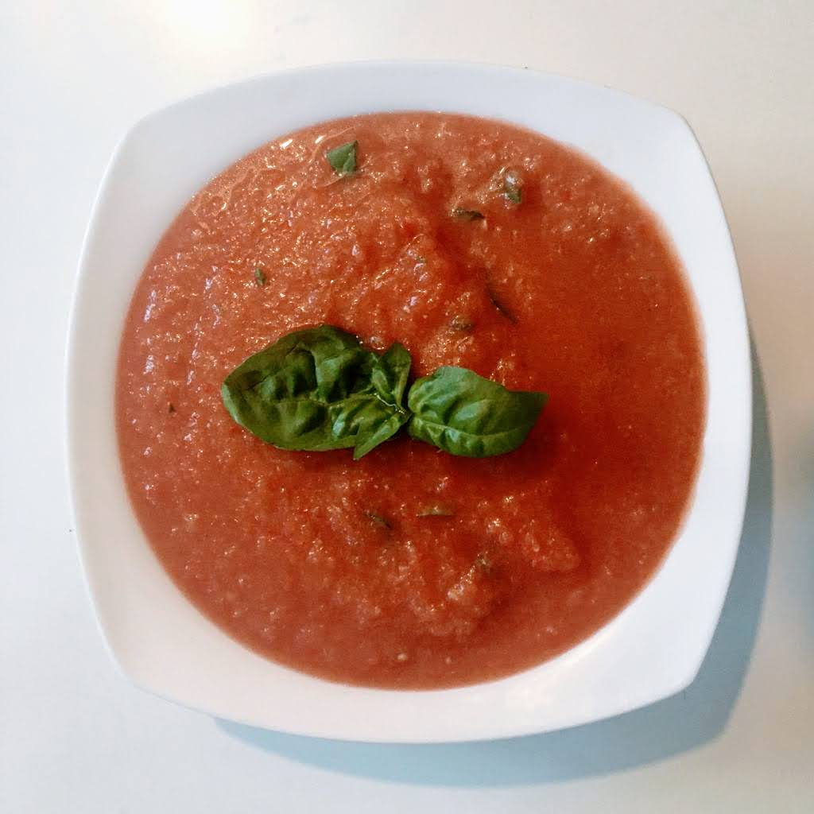

Gaspacho

Pour 4-5 personnes
- Un concombre
- Deux poivrons
- Un piment
- Un bon kilo de tomates
- Deux gousses d'ail
- Deux oignons frais
- L'équivalent d'une baguette de pain
- Deux-trois cuillères à soupe de vinaigre de xérès (ou au pire, d'un autre vinaigre)
- (Facultatif) Un demi-bouquet de basilic frais
- Sel, poivre, bonne huile d'olive
- Éplucher le concombre et l'ail. Couper tous les légumes et un tiers du pain en morceaux. Les mettre dans un saladier, ajouter le vinaigre, mélanger, et presser le tout avec les doigts pour écraser un peu les légumes et former du jus.
- Saler, poivrer, mettre le tout au frigo pendant minimum une heure (ou une nuit).
- Passer le contenu du saladier dans un moulin à légumes avec la grille fine ; si on a pas de moulin à légumes, mixer jusqu'à ce que ça soit lisse. Ajouter un peu d'huile d'olive si c'est un peu trop pâteux, ajouter un peu de sel, de poivre ou de vinaigre si ça manque. Remettre au frigo.
- Faire préchauffer un four à 180°C. Couper le reste du pain en tranches assez fines, les badigeonner d'huile d'olive, les saler et poivrer légèrement, puis les faire toaster au four.
- Laver et couper le basilic grossièrement. Servir la soupe froide parsemée de basilic, avec les toasts.